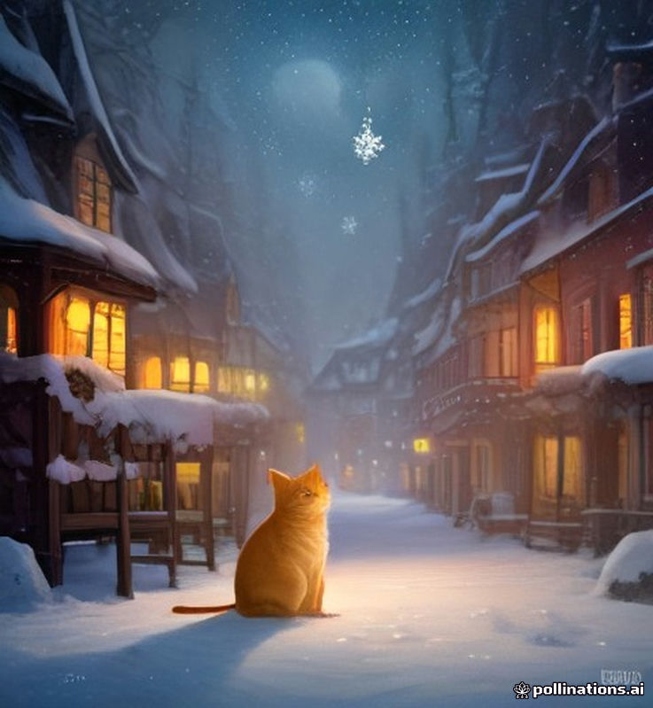
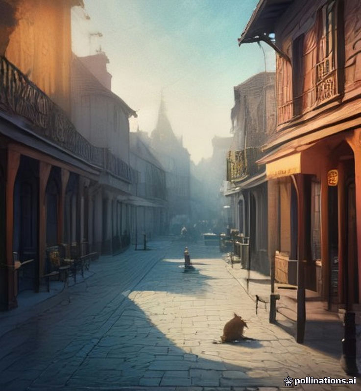
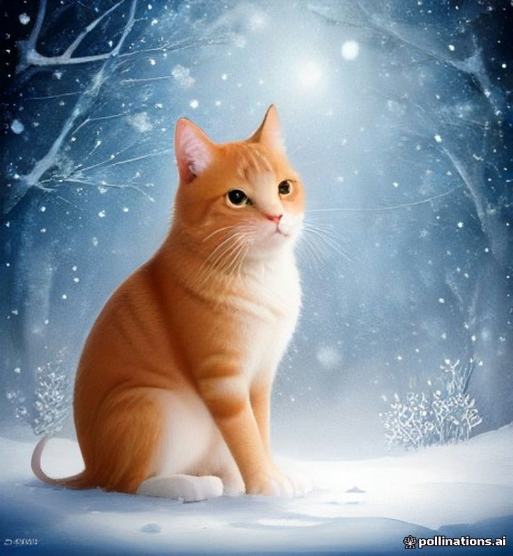
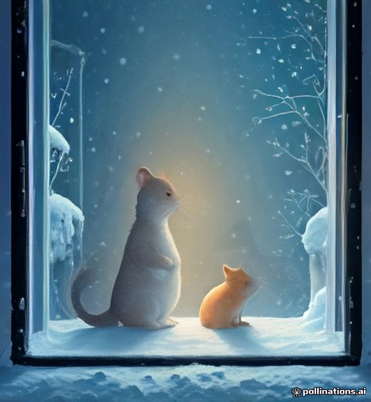
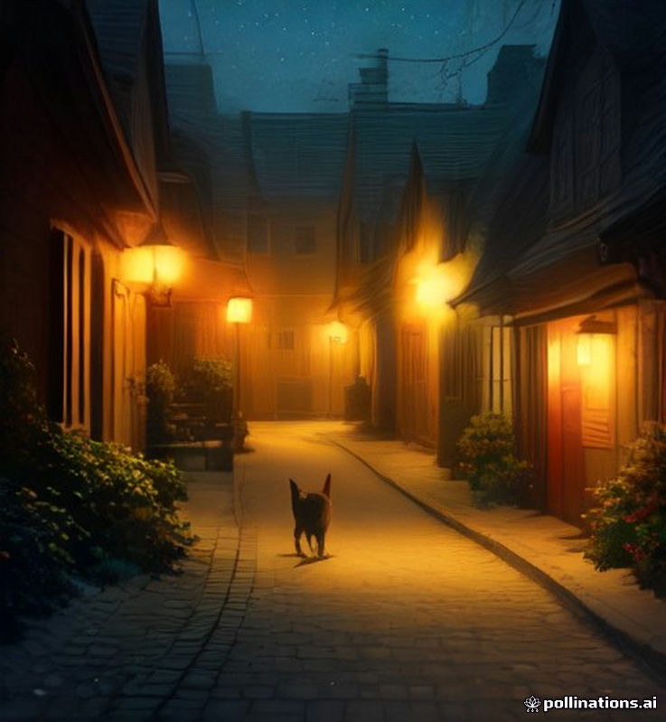

Loki and Pip discover that even a cloudy evening can turn into a magical adventure when the first snowflakes start to dance over the plaza.

The sky over Loki’s Town was the color of a dusty pebble, heavy with quiet clouds. Pip gave my ear a little tug, pointing his tiny paw toward the plaza. Usually, we would be curled up by the heater, but the air felt different today—thick and expectant. I adjusted my teal scarf and stepped outside. The town square was silent, the fountain stilled by the chill, waiting for a secret to be shared by the sky.

Just as we reached the center of the plaza, the first flake landed right on Pip’s nose. He let out a tiny sneeze that made us both giggle. Then came another, and another, like tiny white feathers drifting down from the clouds. The grey world began to turn a brilliant, sparkling white. I realized the clouds weren't just gloomy; they were carrying a heavy blanket to tuck the town into bed for the winter.

We spent the evening making paths through the fresh powder. Pip hopped off my head for a moment, leaving tiny star-shaped footprints next to my big paw prints. We visited the bakery window, which glowed with a warm, golden light that spilled onto the growing snowdrifts. Everything looked like a frosted cake. I felt so proud of our little town; even in the cold, it felt like the warmest place in the whole wide world.

As the evening grew darker, the streetlamps flickered on, turning the falling snow into swirling glitter. Pip climbed back into his favorite spot between my ears, shivering just a little bit. It was time to head back to our cozy house. We didn't find any grand treasures on our walk, but as we looked back at our town covered in silver, we knew we had found something much better: a perfectly quiet, snowy memory.